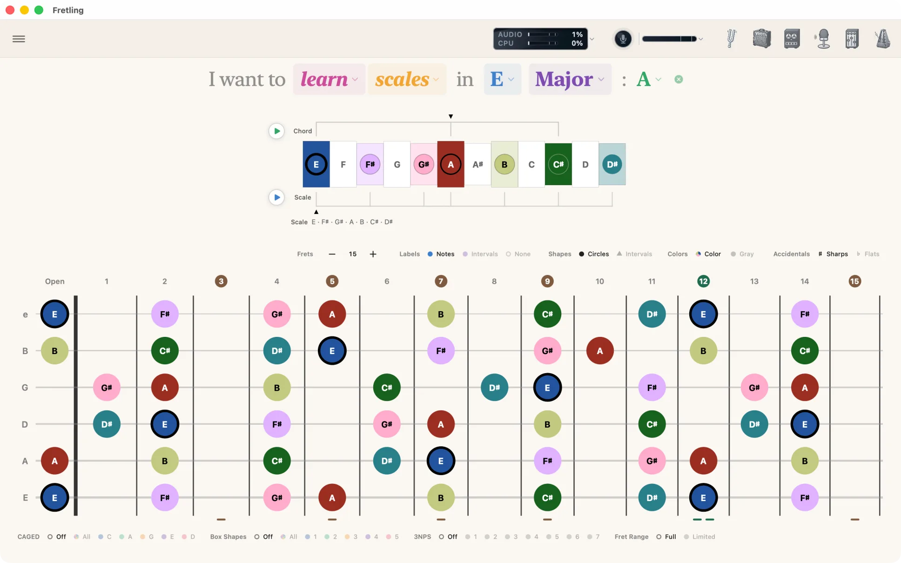
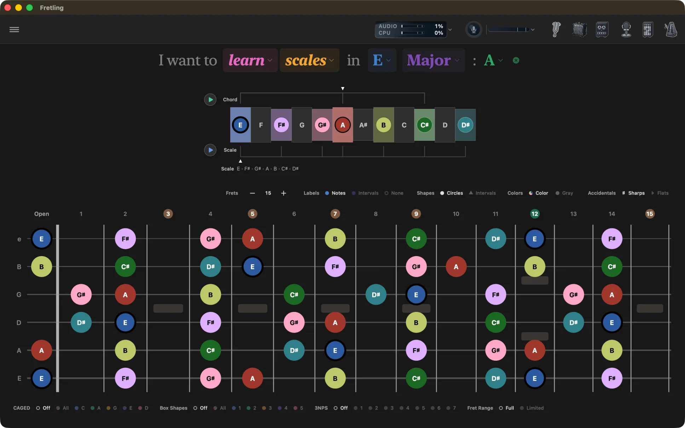
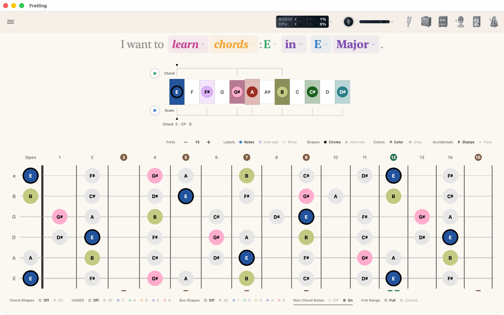
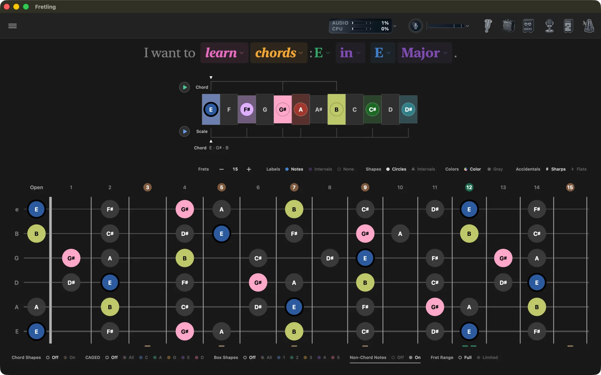
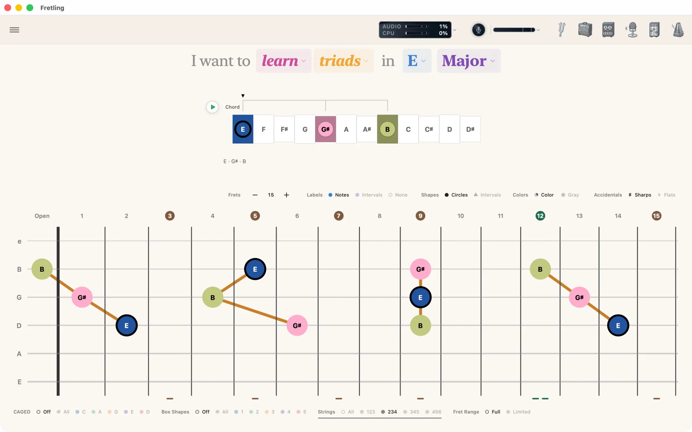
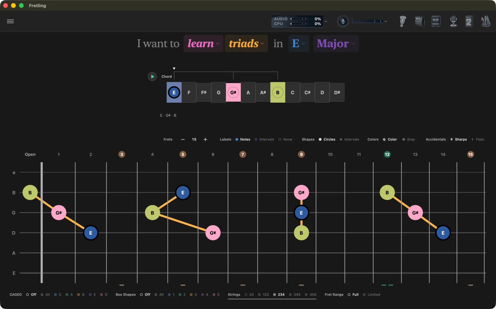
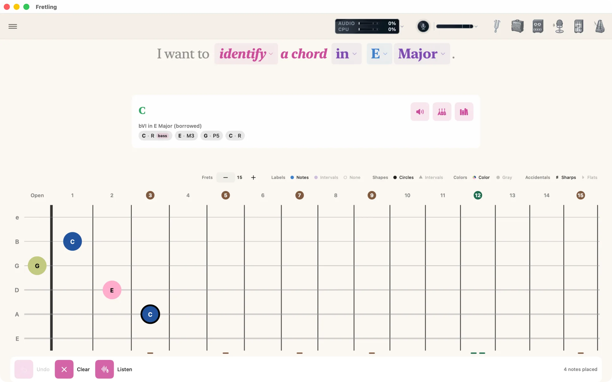
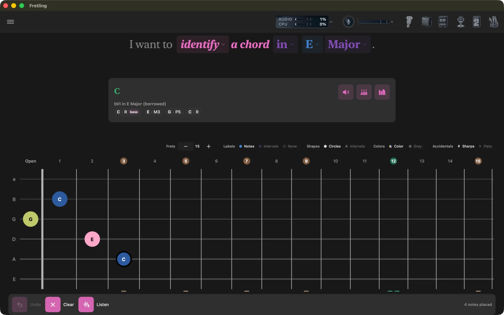

Learning Modes
Everything starts from one sentence at the top of the screen. Each colored word is a dropdown; changing one rewrites what the fretboard shows.
The sentence header
The header reads as ordinary prose and every highlighted word opens a picker:
I want to learn scales in E Major.
| Word | Choices |
|---|---|
| learn / identify | The verb picks what the app is for right now — showing you something (learn) or naming something you play (identify). Switching to identify leaves your learn setup untouched, so switching back restores it exactly. |
| Mode | Scales, Chords, Triads. |
| Root note | All twelve notes. Names follow the ♯/♭ choice in the marker display bar. |
| Scale type | Major, Minor and Pentatonic Major sit at the top; More scales opens the rest — Pentatonic Minor, Blues, Dorian, Mixolydian, Phrygian, Lydian, Locrian, Harmonic Minor, and Melodic Minor. |
| Chord | In Chords mode, and optionally in Scales mode, a chord picker backed by the Chord Atlas. |
The header scrolls horizontally on narrow windows rather than wrapping, so the sentence always reads as one line.


Scales
Purpose: learn a scale across the whole neck in any key.
What you pick: a root note and a scale type — twelve scales in total, covering the major and minor scales, both pentatonics, the blues scale, five modes, and harmonic and melodic minor.
Free or Pro: Major, Minor, both pentatonics and Blues are free. The five modes, harmonic minor and melodic minor are Pro.
On the fretboard: every note of the scale is marked. The scale timeline above the neck lays the twelve semitones out in a row so you can see the shape of the key itself. Below the neck, Visual Groupings let you overlay CAGED shapes, one of the scale’s five position boxes, or a three-notes-per-string pattern.
Adding a chord: Scales mode has an optional chord slot at the end of the sentence. Pick a chord from the Chord Atlas and it becomes the key's context — the scale timeline, the Chord play button and the Atlas all follow it. It deliberately leaves the fretboard alone: in Scales mode the scale is the subject, and a chord tone drawn louder than its neighbors answers a question you did not ask. Clear it with the ✕ beside the chord to go back to the scale on its own. To see a chord's tones marked on the neck, switch to Chords mode.
Use it to: learn one key thoroughly, then switch on Box Shapes or CAGED to see how the patterns you already know line up inside it.


Chords
Purpose: explore the chords of a key and see where each one sits on the neck.
What you pick: a root note, a scale type — which sets the key — and then a chord. The chord picker is the Chord Atlas: it lists the chords of the key with their Roman numerals, lets you preview each one, and reaches beyond the diatonic seven when you want it to.
Borrowed harmony: the Atlas does not stop at the seven chords of the key. Pick a chord from outside it and the Atlas names the borrowing rather than shrugging: a secondary dominant reads Borrowed · V/V, a chord taken from the parallel mode reads Borrowed · iv, and both sort up with the chords of the key. There is nothing to switch on.
On the fretboard: chord tones are marked in full color. Set Non-Chord Notes to On in the chip bar under the neck to keep the rest of the scale visible underneath in gray, so you can see the chord inside its key. Non-diatonic chord tones are always drawn, whatever the scale filter is doing.
Chord shapes: with the Chord Shapes chips below the neck set to On, real fingerings for the selected chord are drawn on the neck, optionally with finger numbers, and optionally cued on the timeline. See Chord shapes.
Use it to: see how the chords of a key relate to one another, and how each one maps onto a CAGED shape.


Triads
Purpose: practice three-note voicings on specific sets of strings.
What you pick: a root note and a triad type — Major, Minor, Augmented, or Diminished.
On the fretboard: triad tones are marked across the neck. Turn on Show Triad Lines in Settings → Fretboard to join each triad voicing with a line. The Strings group in Visual Groupings narrows the view to one string set — 123, 234, 345, or 456 — so you work one shape at a time. CAGED and Box Shapes are available here too; the boxes come from the pentatonic that fits the triad.
Use it to: learn a triad on one string set, then move the same shape up the neck and across to the next set.


Identify a chord
Purpose: the reverse lookup — you have a shape under your fingers and want to know what it is called.
Change the verb in the header from learn to identify and the sentence becomes “I want to identify a chord in C Major”. A chip lets you drop the key: “… a chord without a key”. With a key, readings are also named by their Roman numeral in that key; without one, they are named on their own terms.
Giving Fretling the notes
- Tap them onto the neck. Tap a position to place a note, tap it again to remove it. A placement toolbar gives you Undo, Clear, and a running count of placed notes.
- Play them. Pro Press Listen in the placement toolbar — it opens Live Detect and starts it listening — play the chord, and press Capture what I played to place what it heard on the neck, in place of whatever you had put there (Undo brings that back). The same move is on Live Detect's own panel as Send to fretboard.
Reading the results
Fretling ranks the possible names under a Readings heading rather than committing to one answer — the same set of pitches is often several chords, and which one is right depends on context the app cannot see. Slash chords are shown with their bass note called out. From a reading you can:
- Hear it — play the chord back.
- Show voicings — see playable fingerings for that name.
- Open in Chord Atlas — jump into the full chord entry.

